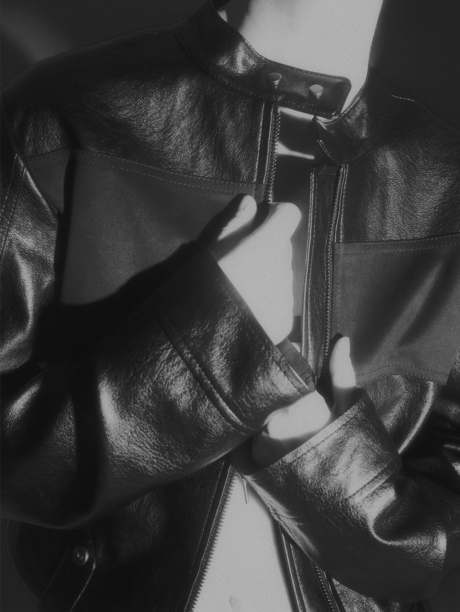

전 · 후면부 양면으로 활용 가능한 2-way 스타일링의 브이넥 니트입니다. 소프트한 터치감의 울 혼방 원사로 유연한 착용감을 느끼실 수 있습니다. 자유롭게 활용이 가능한 넥 · 웨이스트 스트랩으로 다양한 실루엣 연출이 가능합니다.
Scroll
전 · 후면부 양면으로 활용 가능한 2-way 스타일링의 브이넥 니트입니다. 소프트한 터치감의 울 혼방 원사로 유연한 착용감을 느끼실 수 있습니다. 자유롭게 활용이 가능한 넥 · 웨이스트 스트랩으로 다양한 실루엣 연출이 가능합니다.

디렉터's PICK 3.
Incision Denim Set-up Jacket
Incision Denim Set-up Pants
Incision Denim Set-up Skirt
빈티지한 무드의 워싱이 멋스러운 데님 셋업입니다. 함께 스타일링 시 더욱 멋스러운 무드 연출이 가능합니다.

TMB Square Logo Sweat Hoodie Zip-up
TMB Square Logo Sweat Pants
Basic Ribbed Crop Tank Top
볼드한 TREEMINGBIRD 뉴 로고 자수가 매력적인 스웻 셋업은 유니섹스로 착용 가능합니다. 금속
장식 포인트 탱크탑과 함께 여유로운 스타일을 연출하실 수 있습니다.